| ＭＩＫＡＲＩＫＡ | |
| 春日寛 | |
| (2018) | |
ＭＩＫＡＲＩＫＡ
大事なこと
忘れがちな責任
すりかわる日常
傘持ってきてくれる黄色いうさぎ
レンガ造りの巨大工場
熱狂する黒く低い天井の地下室
忘れてはいけないのはやるべきことかやりたいことか微笑むことか
最後まで太陽は空を輝かせているのだから
見上げよう立ち上がれなくても
ホラ顔にも光が
遠く夕日が家家に影を落としても衛星イオは
応援のタオルを振り続けるから
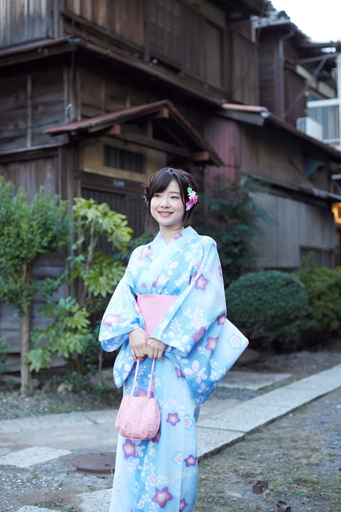
きらびやかな提灯が整然と並ぶ
櫓を取り囲んでもう人々は待ちきれない
近所の幼い子どもが浴衣を着て写真に収まる
赤い橋の向こう
誰かのスピーチが始まっている
渋柿のように吊るされた願い事
道路は非日常空間になり
高いガラスの音も響き渡る
炎が揺らす暖かい人々の囲い
空にはまだ太陽の名残が紫を残して
男女寄り添うシルエット
鮮やかなネオンライトの輪が揺れる
手をつないで飾られた街路樹の下を
ライトアップされた象の鼻のように
水面に長く明かりを伸ばして
王冠のような輝く馬車に
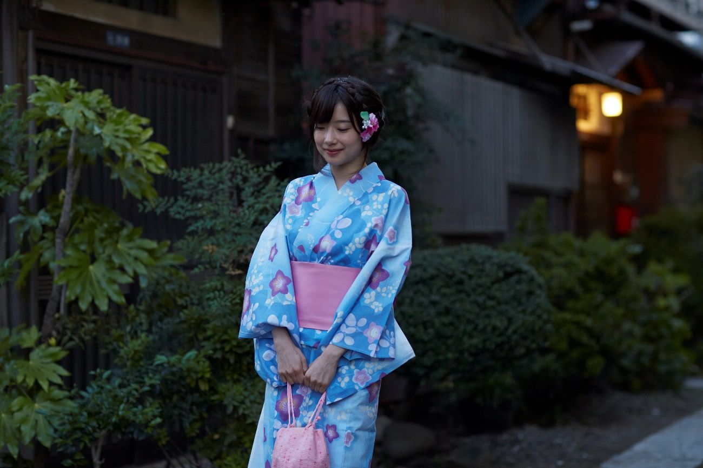
指示通りに鍋のものは捨てただろうか
疲れて簡単なことも頭が働かない
黄色いテーブル掛けとたくさんの食べ物
オリンピックスターと譲り合った椅子
巡回に来る看護師
50代女性へのセクハラ被害は共感されるだろうか
細い肩でも子ども2人産んだ
コーチの表情
若い女性の美しい髪その顔
年老いたロックスターがいつものようにご機嫌にしてくれている
美しい髪は土地の米のような宝だ
腐った海で体の自由をも失い
空を見上げを流れる筋雲を
野良猫のストレッチ
古い町の緊張感のある風景
整えられた美しさよ
よそ者としての郊外人
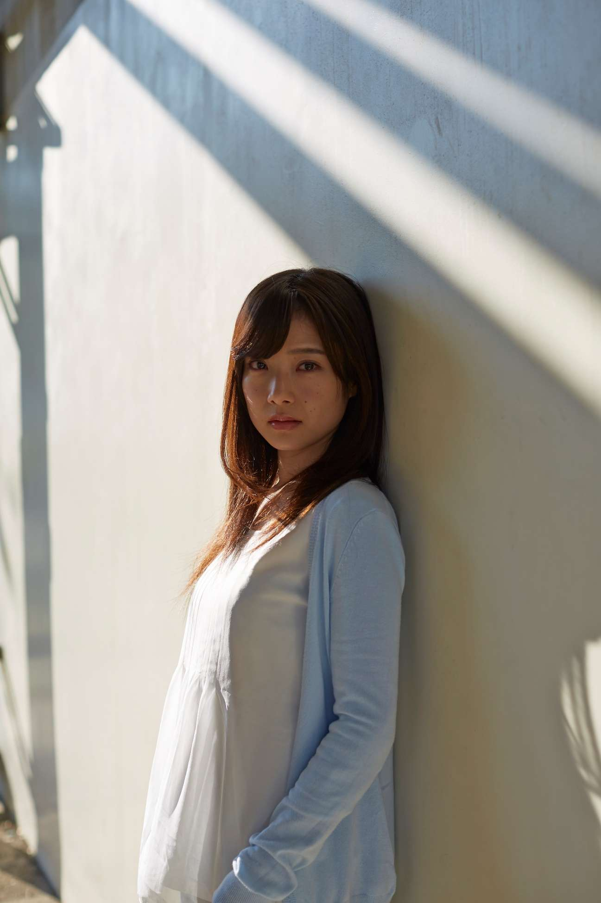
矢をつがえ
背中で語る
必ず生きる道はある
頭のすぐ上に現れる雨雲
車椅子を押す素敵な美女
セーラー服の間から尻尾ポニーテールの隙間から三角の耳
子孫にまで迷惑をかけて
働く3人組と遊んでいる3人組
マグカップいっぱいのマカロン
太陽が黄白く輝いて
燃えてもいない１本の大樹を墨のよう黒くしてしまう
山は稜線だけに生命を残して
雲をピンクに波をオレンジに
長大な橋でさえやがて夜の中に沈む

とるな
フラッシュを焚いての撮影
とるな
銀河の彼方からやってきた鉄の塊が2人の間に停まる
ボーダーラインの服にビニール傘
都会の輝きの裏に故郷の寂しさはないか
バレエダンサーの小さな頭の上に髪はまとめられ
君の顔は白く青白く
理想と少しの差で劣って見える現実
柱の間から覗く遊び
青い服青い爪
見上げる眼差しが普通でも若さが元気に見せる
目を閉じてりんごの肌にキスをする
これから始まるプロジェクトに力を込めて
頑張っているのだから
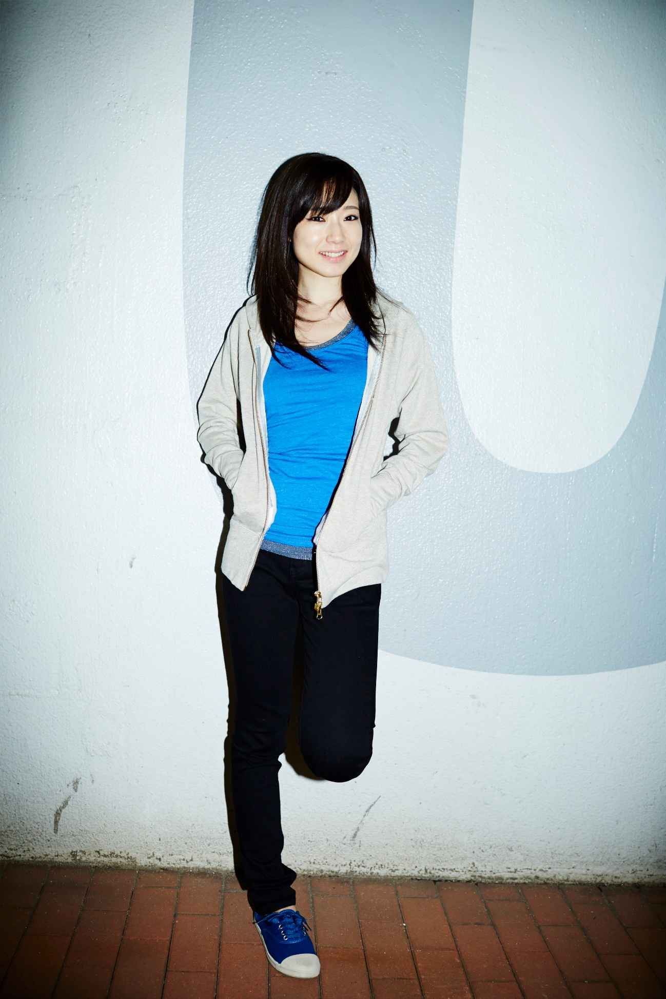
海藻に扮したダンスが始まる
スタート位置はそこから
地を感じろ
中空に体を遊ばせろ
ジョジョ立ちを左右交互に切り替えながら
赤いマントを翻し観光地の路上に現れる
T I C V E S
体で文字を作っていく
空から舞い降りるハゲヅラとメガネ
肩をいからせてモデルウォーク
呼んだかい？腰を入れて聞いてみる
指先はさりげなくアローハー
タリラリラン
腕を横に開いてスキップ踏めば
他の動きは不思議とついてくる
手は顎の下
手は空の中
両腕は大きく開かれて
港の係船杭に片足をかけたら
いよいよ素敵なアイドルに
長いサイドポニーの髪を
チャイナドレスの裾と一緒に踊らせて
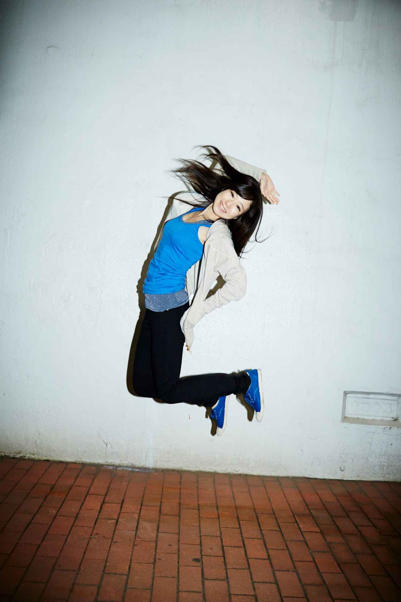
見上げるベランダに面した掃き出し窓
コンクリートとウォールナットのコンビネーション
赤いエレベータードア
外光が差し込む朝の時間
赤みがかったあたりから家族の団欒が見える
防音マンション♪ピアノ鳴らして
木の影に隠れがちな建物や
部屋より広いルーフバルコニー
都会すぎない工事現場に
そこに居心地を求める
3階まで吹き抜けるエントランス
石造りの大きな柱と並んで立って見せる
イームズのチェアが勝手に招いている
逆コの字 逆Ｌの字 ヨの字
広げた世界は机の上
右から入って右から出る造形の流れ
それはまるでテレビ台
コーヒーと手帳を開いて
ピンセットで岩肌にしがみつく君を捕まえる
何にでも全力
着々と居場所を作り上げるために
砂浜に焼けた肌美しい緑色のビキニ
ハーフのような顔と名前でもただの田舎者
大きなこぼれそうな胸と
日々の精神力で作ったウエスト
お尻には夏の1日で作った黒抜きのハートマーク
こんなに素敵な女性と思わなかった
体をさらして床に寝そべる
この時だけの肌の弾力
肩甲骨からの細い腕
波を弾くからだと上目遣いの笑顔
心でピース 君は夏の勝者
遠く島があるのに君を見てしまう
君がじっと見つめてくるから
ワッフル 焼肉 コーンスープ トマトスムージー いちご カフェラテ
よく食べるオフショル女め
両手で顎を抱えるようにしてキメ顔を作るこの日
男物のジャケットを着てきた
キス顔すると金太郎みたいで可愛いね
酔いがまわって怒ってこない
あーよかった助かった
机に置いた赤いイヤリング
陽の光を少しだけ透かせて
ダリアの白い花と金色の金具が
ハートを射抜くように
むしろハートの内の本質のように
両手いっぱいに広がる反射した赤
それはきっと両手で救って見せた想い
青い月 膝を沈めてしまう穏やかな海
傷を隠す子どもの姿
愛されたいを拒絶されること
まるで小さなぬいぐるみ
熊でも犬でもないよ
水晶のような瞳でテーブルの上の
アメリカンショートヘアが見つめている
赤いクチビル
まるでエナメルで塗ったように
少しだけホクロをつけて
赤いサクランボを含む
バラの花束を抱えて
鎖骨の縁を高くして
髪を食べさせようとする青い風
きれいなピンクの発色とサテンのスカーフを合わせて
どっしりとした赤と白い肌のコントラストが強くなればなるほど
大人の海へと遠く流されていく
食べるための唇が話すための唇で
ため息をつくための唇へ
人目を気にしないキス
幸せを確かめるために
ガーデンに咲くストロベリー美しく
澄んだ眼差しの
あなたが1番だとはっきり言える心
なんて美しい女
このかけがえのない地獄
可愛すぎて死にそうな時間
オレンジが噛み付いたカクテルグラス
ぼんやり浮かぶ店内に談笑している白シャツの2人の男
言葉の力とは
人生を変えられるもの
自己満足だけに留まらない
感謝をして勇気づけて
そう世界の全てを結果に浸すために
微笑の影に座り込んで
赤い風船と紫の風船を浮かべている
光が乱反射して君の瞳が見えない
目を閉じて安心したようにする美しい姿
あなたは髪を風に揺らせて
誰にも見せない微笑みを大切にする
見えないガーベラの花畑を眺めている
遠い時間は目が見えなくとも感じられる
もうひとつの世界
もうひとりの私はこの私と同じように感じたりはしない
ほらいつものブロックでいつもの反射鏡いつもの家並みなのに
遠くに見える煙突の煙が
いつもじゃない
肉感たっぷりの女がスヌーピーのシャツを着て縄跳びをしている
自分の姿が美しいかどうか神経質に鏡を確認しながら
豆腐の妖怪が静かに飛んできて
口汚い言葉を可愛らしい声でアドバイスしようとして
言い残して行く
青いジャージの褐色肌の学生たち
ほほえみあう2人の関係は
海風の吹く方を見て
何も話しては言っていけない
額に星を浮かべて
ギリギリ届く岩をしっかり捕まえる
オペラグラスより役に立つスマホのカメラ
怪しい人ほど壇上に立つと先生に見える不思議
評価なんてあってないようなもの
頭痛するほど怒るものでもない

働いていただかないと困ります
がんばりを応援してくれる君よ
でもその責任は少なくとも君には回らない
応援してくれることで心の中に
暖かさと元気が戻ってくるが
冷たいまま走るのはもうやめよう
働かないで給料もらえませんかなんて
応援してくれる君のためにやるのさ
夢がなくなる瞬間はそれが実現する時と信じて
元気が1番何でもできる
ラーメン食べたい
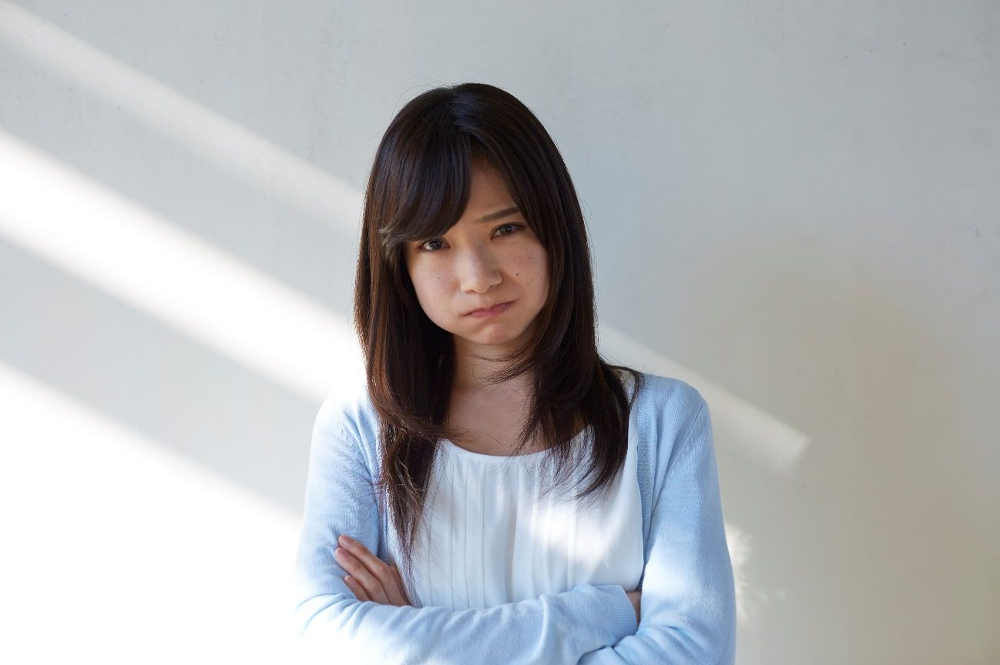
白雪姫をいじめるペンギン
ママは私を大好きなくせに
ネズミだって鼻先にツノを隠したサイだって
みんな怒り出すから
子どものくせに生意気だって
大人はズルをして手柄にしたがる
寒いのを我慢して焼き芋でも食べようとすると
そこでラップがくちゃくちゃに
手元にあるのは新聞 スマホ 文庫本
ぐうたらが子どもたちにうつりそう
仰向けの腹の上
みかんのように小さなカボチャ
凹んだソファーマットの柔らかさ
遊んでるうちに眠くなって
そこだと風邪をひいてしまう
薄い毛布の準備もいつかできていて
自分にそっくりな人形を見つけたら
目を寄せておどけてみたり
クッションの影 草むらに隠れているつもりになって
敵から身を隠すような気分
赤いハイヒールと赤い口紅
赤いイヤリングと赤いお尻
赤がぐるぐる回って落ちていく
鏡に映す色気
サンタがくれた巨大な靴
頬杖ばかりつくのは
誰かにかまって欲しいから
赤いお尻の金魚が泳ぐ
ピー パッ パッ
路上に怯む
肩の力を抜いて
ぶらりと遊びに行くような気分
腕にリボンを結び
濃いサングラスを忘れずに
小さな笑いが誰かの心を緩やかにしていないと
あっ
あっ
肉まんを買うのも苦労する
苦手なのと勇気がないのとは同じでないなら
勇気って失敗を恐れないだけのことだ
堂々と
白い足 白い服 白い部屋
君の笑顔しか温かみを感じない
艶めかしさに読めなくなった本を閉じる
緩いセーターから指を出して
見たことのある表情が映画のワンシーンを匂わせる
不思議な形のギター
子供時代の勉強机
今ではすっかり大人になった
赤い夕日の手前で君と見つめ合う
黄色い灯りの下で君と笑い合う
恋人のふりをした人たちだって
もっと上手にやれるんだ
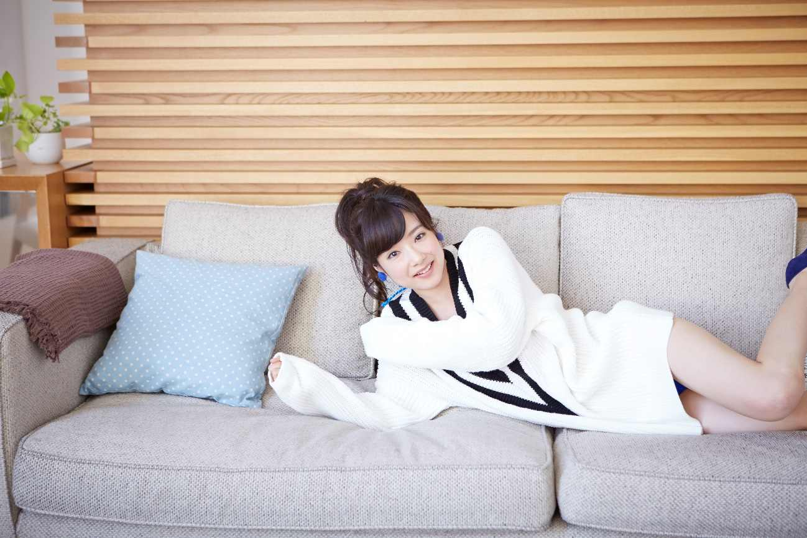
丸顔の人のあの顔
メガネにぼさぼさのストレートの髪質
古い公衆電話
おみくじの木箱
希望を感じたきっかけの場所にあったもの
高校の友人との飲み会
暑いだけの常夏の島
唐草模様のトンネルを走り抜けて
ザッザッザッザッ
今では色のない誕生日会の旗たち
ビールを飲んで恋とムダ毛の話
子どもの頃のぬいぐるみの話
興味のない事はもう思い出せない
楽しかったことと嫌だったこと
でも嫌いな人の事ははっきり思い出せない
人を嫌う事だけは時間の浪費
木樹のアーチを造り上げる人間の凄さ
肩の開いた服
君も彼女も
膝の上に座ったり
友達との会話を優しく見守ったり
ペンダントに見とれていると鼻に指を入れようとする
りんごを持つ手が幸せに震えている
まるでアニメの世界のヒロイン
現実感のない瞳
どうもおかしい接近距離
赤いハートを口紅で描いた手紙だけ
そんな君の告白
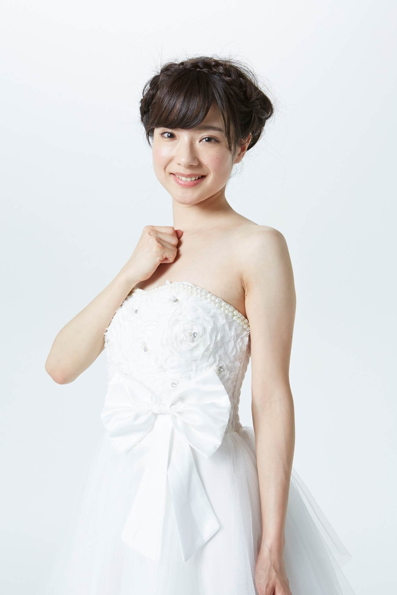
心臓に誓うよ
私は幸せにしてもらうんだって
人生を捧げよ
まるで貴族の結婚式
黄金色のドレスと壁
手からぶら下げるドリームキャッチャー
ジューンブライドの魔法を信じる
ドレスのレース編みが細く美しく見せる
花で飾られたアーチをくぐり
どこの美少女かと思ったら
まるで森の女神
月夜に舞い降りた夜露の精
君の誓いはきっと天まで届く
秋物を着込んだ月刊誌の表紙
猫が植木の花に夢中になって
クマとウサギが2人一緒に森へ戻っていく
仲良しですか
一緒に暮らしているだけ
庭でかけっこしたり
素晴らしい道を歩んだり
仲良く見えないと可愛くない
アイスミルクを入れたマグカップ
これからも2人で支え合う輝く旅路
浅い夢を生きる
毎日が新しい朝
よくわからない缶ジュースを飲んだ
荒唐無稽なピアノを弾かされたり
顔のサイズに合わないおかめのお面をつけて
今日は雨降り
用意した服だけがデートしてる
紫の耳をつけたあなた 白い耳をつけたあなた
死が2人を分かつまで側にいて下さい
稜線がどこまでも伸びる独立峰
アーチを作った岩の柱
苔で覆われた山奥の池は
冬には氷と雪が妖精のように立ち上がる
黄昏を急ぐ2羽の鳥よ
木漏れ日の美しい緑の輝きを胸に
心澄みやかに
神様の常識は私の非常識
あなたの元気は私の楽しみ
素敵な笑顔でハグされて
仲良しはいいね
寒々しい白けた空に
寄り添えない知り合ったばかりの2人
夕暮れはレンガを赤く染め
街路灯は赤みがかったオレンジで
遠くの空だけが黒くなりそびれた静けさを持ち
波は遊園地の光をカラフルに反射している
橋が船のように浮かんで
噴水がワイヤーのように線をはっきりとさせる
午前中にはもっとはっきりと見えていた全てが
まるで本物でないみたい
話を続けるように
ついてくることを確認するように
どこか無意識に
誇り高く胸を張って
笑みをこぼして光を纏う
そちらから涼風が吹くよ
白いスーツが汚れるような元気と
世の中に対する希望が素敵すぎて
茶色がかった髪をかきあげて白い背中を見せる
心配なんかしていないふり
みんなと決めたツインテール
ぶら下げて踊ると
ただの広場がステージに見える
汗で服が体に張り付いていく
君の魅力が別物になっていく
頭の上にサークライン
君は天使になりそびれた女
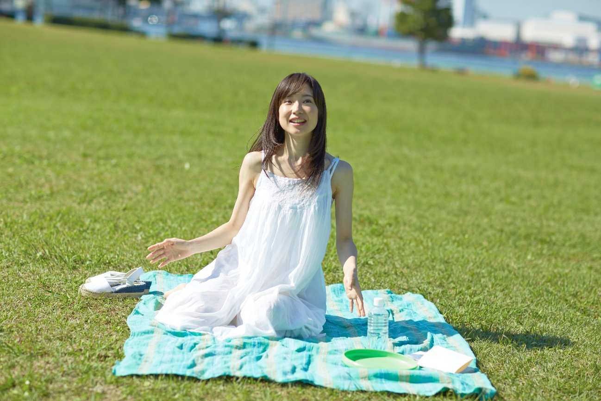
芝生を我が家みたいに座るのは
ちょっと難しい
ましてや寝転がればいろんな虫が体に入ってくる
頭を寄せ合う恋人同士
大学のテキストを読みあって
そんなのもすぐに飽きたら家のソファーみたいに
少しだけくつろいでみる
無理をして
広い散歩道をふたりで歩けば自然と幸せが
笑みになる
バスケットからシャンパンを出して子犬と一緒にボートに乗って
君はやっぱり芝生に寝転べないからって
僕の身体をソファーにする
いいよ
座ってもらえるのも気持ちがいいから
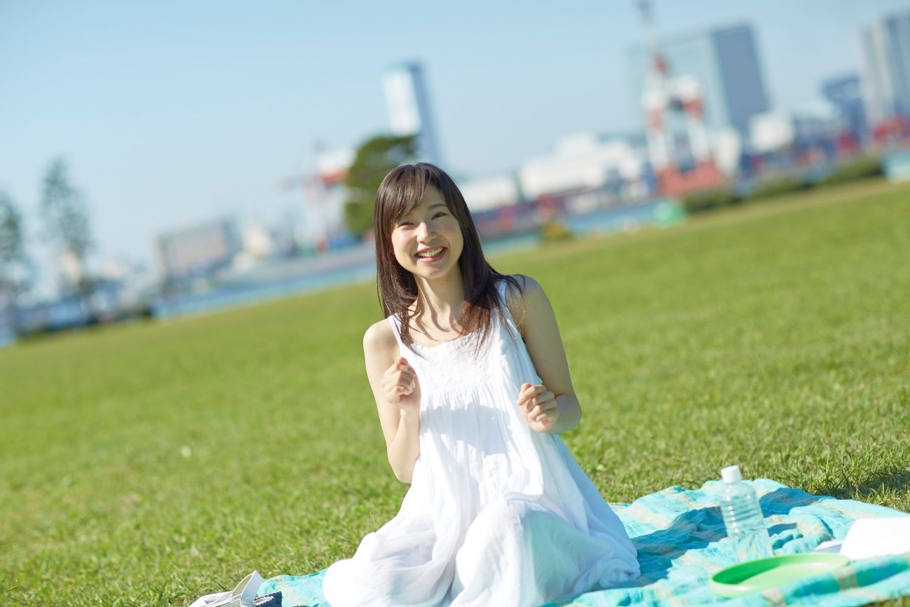
走り抜けていく小さな女の子たち
小川のほとりに集まって
砂場は赤ちゃんが仕事中
おじいさんとブランコしたり
投げた円盤を追いかけていく痩せた子は足が速い
赤い体操帽の子たちは深い草むらを走る
丸いレジャーシートの上から眺めるお母さん達
野を越え山越え追いかけっこしてるつもり
ツルツルの滑り台は誰もが転がり放題
変なぬいぐるみを抱いて頭の上はお団子に結んで
どこか大人っぽいのに
悪気も見せない雰囲気の君
澄んだ空気からあなたは形作られた
青白い息を吸って心は作られた
細い首に似合わぬ楽しい笑顔
鼻と唇が空中に問い掛ける
あなたはどこへ行こうとしているのかと
何も言わない相手に向かって唇でペンを挟み
神秘を描き出そうとしている
両頬に現れる幻に驚いて
老いを憎みマッサージを止めない
可愛い表情を作ったり化粧してごまかすだけでなく
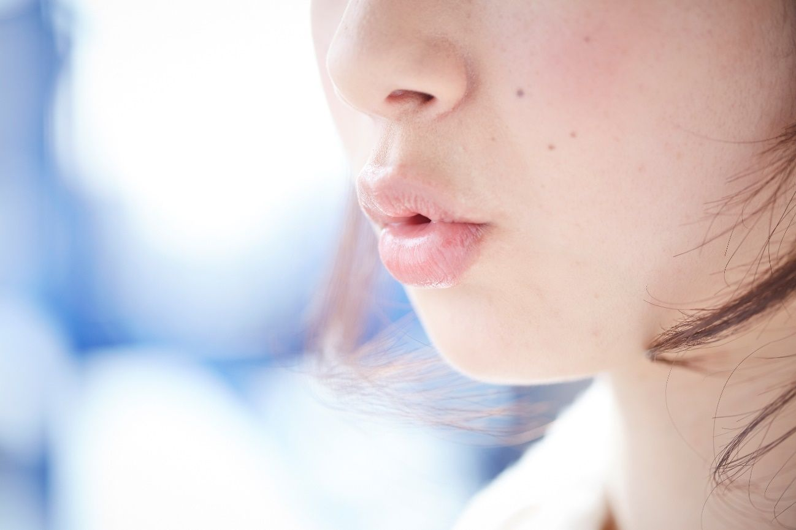
組み合わ去る鼻と上唇と下唇
赤い豊かな唇が上手に組みあって
前歯をこっそりのぞかせながら
少しだけツンと突きだした形から
潤いの消えた滑りやすい感触まで
何秒かごとに姿を変える
いつかのビタビタの唇なんて君のものじゃない
いつまでも
君のキスを見つけるまで
止められない
緑の服を着た天使がそっとテーブルの上から見上げている
間違ってないよと言わんばかりに
あれが白い森の生き物
もう一人ぼっちには戻れない
失うことが怖いから
体に体から無数のセンサーが飛び出して飛び込んで
暗闇の中へ
旅行かばんを引きずって
君はいつも一歩先から振り向いた
長い街路に立ち並ぶ消えた灯りの下も
緑は確かに生き物の住処だ
庭でパーマをあてる人とか
顔は冷たく髪は熱く服は自由
紅葉の京都がずっと色あせない思い出
君とのおしゃべりに
平和を取り戻したいんだ
レースの隙間から覗き込むような君への気遣い
ふと気づいたように見つめる表情
髪が右に流れて
君の大切な一つ一つがバラバラに飛ばされていく
長いカールの魔法使いの仕業で
額の広い色っぽさを
君はまた光の中から浮かび上がらせる
肩に髪をあてながら
すべてはイマジネーション
君の瞳はいつでも君だけの生活の中にいる
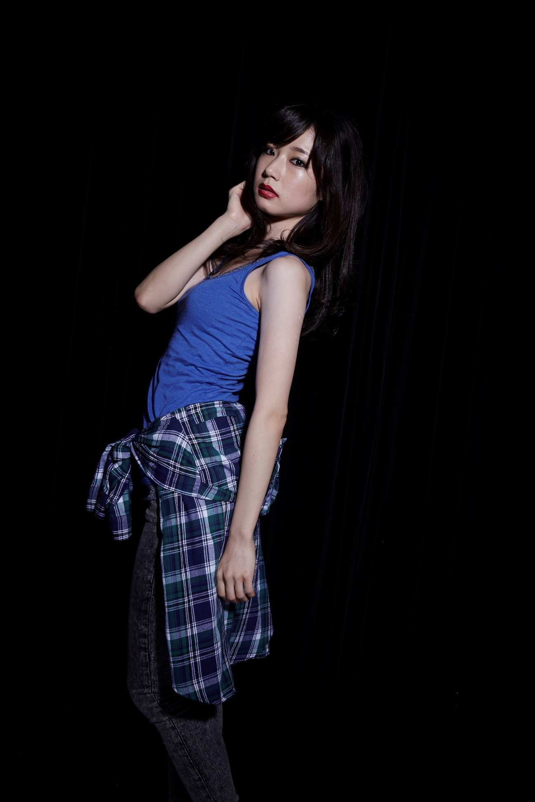
美しきバレエダンサー
美しき女子サッカー選手
美しき若手女優
美しき奇抜な衣装の歌手
アジアの街角で見かけた知性たち
くっきりと顔に紅をさし表情を少し硬くして
目尻に闇をこぼして
秋の近づき
輝く魅力
カラフルは優しさを飛び越えるから
体の左右がバラバラに育ってしまう
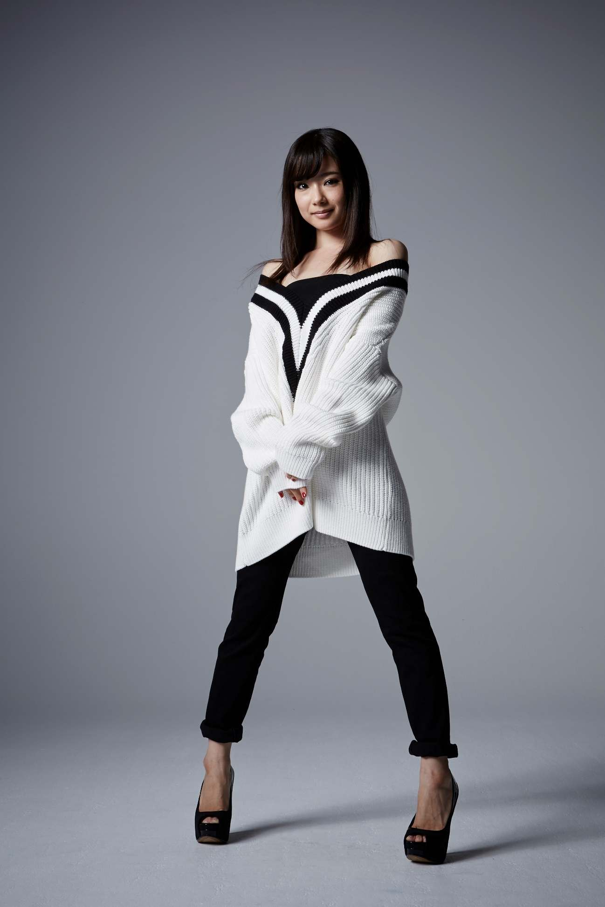
背中から服を脱いで
黒い瞳と髪
また君のドジに会える
スプーンで掬いそびれた評判のケーキ
黒いストッキング
セーターみたいなスカート
流行の納得いかないサングラス
デートを待つ子供みたいな姿に
躊躇しながらサンタみたいなコートを羽織って
気をつけすると君は背が小さい
指先まで隠して
可愛く怒ったようなふりをする
肩に話せる猫を乗せたまま
ジャンクフードにヘッドホン
アホ毛が金色に透けて
細いその一本が軽やかに踊る
ボーダーとかブカブカとか七分丈とか
何か外してないとダメなのかね
耳をパンダにして聞いても
何も聞こえてこない
ただ足の指先を見ているだけなのに
小さなハートを誰かが手のひらに乗せていった
心がぴょんぴょんするってこういうことか
透明人間が体を操って
うさぎさんのポーズを取らせてくるよ
これは考えものですな
どんなに嫌な気分を乗り越えても
無課金でできる世界の狭さよ
それを美しすぎる人に言葉として伝えられない
ソファーに両腕を開いて凄んだつもりが
肩がボキボキ鳴ってしまった
上司の冷えたコップは水滴をつけて
そら豆の上で仙人が悩んでいる
もうやめよう生意気な態度も無駄に怒ることも
プレートからピザをワンピース
勝ったような笑み
明日に向かって噛みつけ
のびるチーズにうっとりしながら
食卓を彩る様々な恵み
ミニトマトと目玉焼き
豪華な和食懐石
小さなメロンパンも食べる
ボンゴレパスタホワイトクリーム
エビフライのサンドイッチ
チーズ山盛りのシーザーサラダ
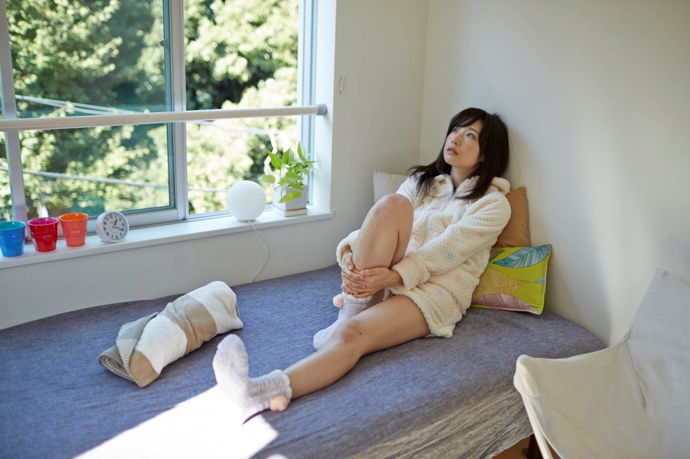
2人隣で寝たのに腕押され
とにかく可愛い顔でひたすら見つめられる
鼻の下に一本指を当てて
どうしたの
何全然わからないよ
いつしか眠くなってきて
君の頭が胸の上に
両足で足を挟むように絡ませて
頭の匂いをかいだ
まさかのテレビドラマの俳優が同じことをしてる
あの人たちは男が上になってるよ
クスクス笑ってばかりの君そして衝撃発言
ネットに書き込むよ
何のために
失うものもない2人にとって何の意味もない
バナナと生クリームの馬鹿みたいなパンケーキ
マンゴー味のかき氷
こんな人とは結婚できない
メニューはいつも豪華スイーツばかり
クッション臭うよ
静かなデスクと椅子の部屋の隅を眺めながら言ってやった
スマホをやめたとして
お化けが可愛くなるわけじゃない
子供が百科事典を眺めるのと
敬虔な老人にとっての経典は価値が違う
わざといい加減に読んでみる
学ぼうなんてそんな下品な本
手のひらの線を眺めているとエア読書だって笑う
君こそ本が逆さまだ
本じゃないところ見てるから気づいてない
緩やかなカールの髪がとっても女性らしくて大好きだよ
HIKAKINの話はもういいよ
自分たちの人生の成功について残酷さについて
もっと話したらきっと
お互いを大切にし合う事しか残されていないって
偉い人たちみたいに分かるはず
聞いてる？
寝てるの？
頬を舌で膨らませ
黒のスーツも似合わない
汗まみれの仕事の後は寝つけなくて天井が近い
イケメンの全てが特殊メイクに見える
小金持ちのおじさんはおばさんに見える
ツヤツヤな髪の君
モーニングコーヒーと大学でやりそびれた哲学書で素敵に目覚める
英語なんて全く身に付かない
それエビじゃないよ食べちゃダメだ
月金だけのお食事処に
生者と死者は扱われている
心は落ち着いたまま祈りは記録される
2人の運命はひど過ぎる
犯人を早く見つけてしまわねば
冷蔵庫にピザ
ホールチーズの匂いが止められない
みると猫が足の匂いを嗅いでいる
君は臭かろう
デリバリーされたピザは4種類のトッピングに分かれている
鼻だけが向こうに行ってしまった位
おいしそうな匂い
鼻を摘んで叫びだす
マジで！
人が集まるまでおあずけくらってるのが辛くて
顔にシールを貼りまくってちょっとした異界の人物に
こんな世界に来たのは今日が初めてデス
そんな優越な気分
あとがき
詩だけの詩集では華がないと思い、パブリックドメインになっている写真をもとに詩を当てて詩集を作ろうと思い立つ。どうせなら美人な女性をと、ミカリカさんの存在を知り、写真をダウンロードして詩集を作った。
当初写真の上に詩を重ねようとしたが、あまりにもイメージが干渉しあって悪夢みたいなのでやめた。想いたっぷりで気持ち悪くならないように、写真のキーになるイメージを抽出して作った。ひとつひとつの言葉の中央に写真が来るようにと思いながら、少しずらそうという意図もあって、全然違うことを書いていたり意味不明に感じるかもしれない。
最初はミカリカさんを見分けることを楽しんでいて、ミカさんの天真爛漫さリカさんの少し慎重な様子を見抜いたつもりになって、特にリカさんの憂いに詩を当てることを楽しんでいたが、スケジュールを2週間と決めたので、他の仕事をしながら40編近くの詩を当てるのは筋トレに近い辛さがあった。
少しでも気分が良くないと嫌な女に見えてきて、こちらの人格を尊重してくれないような妄想が湧きたち、イライラをぶつけるための不毛なノートが消化されていった。そうまでして詩の本を作る意味など何もなく、ただ書こう作ろうと思ったエネルギー自体をセルフで尊重しているだけに過ぎない。
お世話になったのは、ミカリカさんとそのスタッフ。ありがとうございました。他には自分しかいないが、時を隔てた自分にお疲れ様の気持ちは忘れない。
2018年10月 春日寛